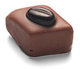
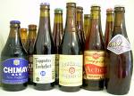
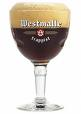
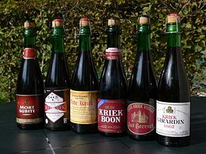
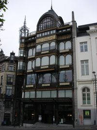
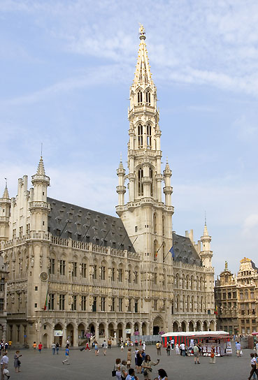
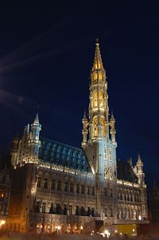
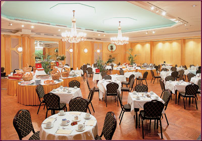

AOSD Social Events
Chocolate tasting, VUB
5.30pm-7.30pm, Monday March 31st, 2008
|  |
Belgian chocolate is considered to be the gourmet standard against which all other chocolate confectionary is measured. Even the Swiss, known for their own high quality chocolate, imported the basic recipe from French and Belgian chocolatiers.
Chocolate Ingredients Belgian Chocolate History Belgian chocolate has been popular since the 18th century, but in 1912, a new process created by Jean Neuhaus increased its popularity ten-fold. Neuhaus, using a special type of chocolate called "couverteur" as a cold shell, produced what he called 'pralines'. Not the same as the sugary treats offered in American candy shops, these Belgian chocolate pralines could be filled with a variety of different flavored nougats or creams, such as coffee, hazelnut, fruit, or even more chocolate. Few other chocolatiers in Neuhaus' day could duplicate the complex flavors of his pralines. Many of the Belgian chocolate praline companies are still in operation today - Leonidas, Neuhaus, Godiva and Nirvana are famous for their gourmet pralines. |
At the chocolate tasting event, you will have the opportunity to try out the chocolate of Neuhaus, Godiva and Côte d'Or.
There is also a chocolate museum (a museum about chocolate) in Brussels. If you are planning to visit Bruges, you can also visit the chocolate museum there.
Belgian Beer Degustation, VUB
5.30pm-7.30pm, Tuesday April 1st, 2008
|  |
Belgian beers have become fashionable, yet the pleasures they offer have been truly explored by only a discerning minority of drinkers. The rule, never ask for "a beer" applies especially in Belgium. Such a request will bring forth a perfectly acceptable lager of a type, but one that could just as easily be found in many other countries. The great beers of Belgium are not its lagers. Its native brews are in other styles, and they offer an extraordinary variety, some so different from more conventional brews that at the initial encounter they are scarcely recognisable as beers. Yet they represent some of the oldest traditions of brewing in the Western world. |
|  |
No other country (even those with far more breweries) has among its native styles of beer such diversity, individuality, idiosyncrasy and colour. Nor does any other country present beers so beautifully. Belgian brewers often use wired and corked Champagne bottles, and serve each beer in its own shape of glass, ranging from flutes to snifters and chalices. It is something of a Belgian speciality to bottle beers with a sediment of live yeast, so that they can be laid down to mature. This technique is usually indicated on the label by the phrase "refermented in the bottle" (Refermentée en bouteille / Hergist in de fles). |
 |
Michael Jackson, http://www.beerhunter.com/
More info:
- Belgian beer on Wikipedia
- Lambic, a very distinctive type of beer brewed only in the Pajottenland region of Belgium (southwest of Brussels).
Welcome Reception at the Musical Instruments Museum
7:00pm-9:00pm, Wednesday April 2nd, 2008
|
About the Musical Instruments Museum:
The saxophone, invented by Belgian Adolphe Sax, is just one of the over 1500 instruments on display in the Musical Instruments Museum. Its four floors cover the development of the modern orchestra, string and keyboard instruments, traditional instruments and mechanical instruments. Visitors are provided with infrared-controlled headphones so one can also hear musical extracts for a number of instruments while passing them by, ranging from ancient Greek to 20th-century Varèse music. Housed in a splendid Art Nouveau building by Victor Horta, the museum is even worth a visit for its architecture alone.
|
 |
More information
- Official website of the Musical Instruments Museum
- Musical Instrument Museum on Wikipedia
- Musical Instrument Museum on the BBC website
Banquet Dinner at Balzaal Excelsior, Hotel Metropole
preceded by a reception at Brussels' city hall
6.30pm, Thursday April 3rd, 2008
|
About Brussel's city hall:
When entering the Market Place from one of the seven side-streets, one's eyes are drawn automatically to the gothic tower of the town hall pointing skywards. Up to this day the "Hotel de Ville", or "Stadhuis" is considered to rank among the most beautiful city halls in the Low Countries. The Town Hall currently comprises a large collection of works of art and, in particular, tapestries made in Brussels. But, in fact, it is not in any way a museum because the building still houses today some of the local council departments (the offices of the deputy burgomasters, the local council secretariat, the protocol department, etc.). All the rooms on the first floor are still used on a daily basis, whether for meetings, functions or weddings. More information on trabel.com, monarchie.be and Wikipedia |
  |
|
About hotel Metropole:
Hotel Metropole, built in 1895, is the only 19th century hotel in Brussels still in operation today.
There is a famous photograph of the first Solvay conference held at the hotel.
This only remaining hotel of the 19th century in Brussels is noticeable by its
internal decoration. In fact, the main entrance has been decorated in French
renaissance style, the reception hall in Empire style, some rooms in Art Deco style. |
 |